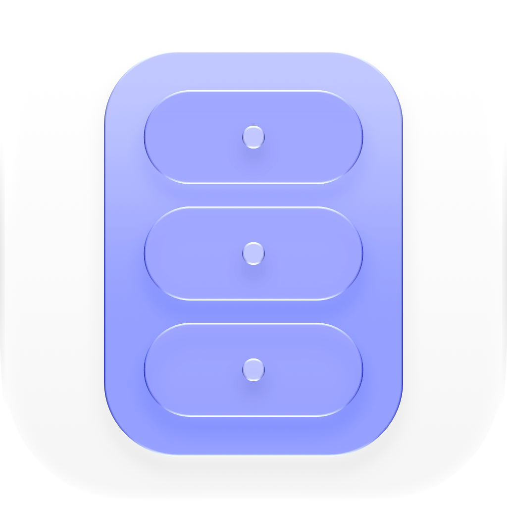

Última actualización: 17 de julio de 2026
Cabinet ("la App") es desarrollada por Eduardo Flores ("nosotros"). Esta Política de Privacidad explica qué sucede con tu información cuando usas Cabinet.
En resumen: no recopilamos nada. Cabinet fue diseñada para mantener tus datos en tu dispositivo, cifrados, y completamente fuera de nuestro alcance.
No operamos ningún servidor ni backend para Cabinet. Como resultado, no recopilamos, recibimos, transmitimos ni tenemos acceso a:
Todos los datos que creas en Cabinet —cajones, elementos, valores secretos, notas e imágenes— se almacenan localmente en tu dispositivo mediante almacenamiento cifrado. Los valores secretos se cifran antes de guardarse en disco. No contamos con ningún mecanismo para acceder a estos datos, descifrarlos o recuperarlos si pierdes tu dispositivo, ya que nunca recibimos una copia de ellos.
Los suscriptores de Cabinet+ pueden habilitar la sincronización con iCloud para mantener sus cajones y elementos consistentes entre sus propios dispositivos. Cuando está habilitada, tus datos cifrados se transmiten a través de la infraestructura de iCloud de Apple y se almacenan en tu cuenta personal de iCloud, bajo la propia política de privacidad de Apple. En ningún momento operamos, alojamos ni tenemos acceso a estos datos —se transfieren directamente entre tus dispositivos a través de tu Apple ID. Si no te suscribes a Cabinet+ o no habilitas la sincronización, ningún dato sale de tu dispositivo.
Las suscripciones de Cabinet+ son facturadas y procesadas en su totalidad por Apple a través del App Store. No recibimos, procesamos ni almacenamos los datos de tu tarjeta de pago, dirección de facturación, ni tu historial completo de compras —todo eso lo maneja Apple bajo su propia política de privacidad. Solo recibimos, a través del framework StoreKit de Apple, una confirmación de que existe una suscripción activa, para que la App pueda desbloquear las funciones de Cabinet+; esta confirmación no incluye información de pago.
Si nos escribes para soporte, tendremos acceso a tu dirección de correo electrónico y a cualquier información que decidas incluir en ese mensaje. Usamos esto únicamente para responder tu solicitud y no te agregamos a ninguna lista de correo ni compartimos tu información con terceros.
Contacto: Eduardo Flores — edfloreshz@gmail.com
Cabinet no está dirigida a menores de 13 años, y no recopilamos conscientemente información de menores, en congruencia con la Sección 1 anterior (no recopilamos información de nadie).
Si esta política cambia, actualizaremos la fecha de "Última actualización" al inicio del documento y, en caso de cambios importantes, lo indicaremos en las notas de la versión de la App. El uso continuado de la App después de un cambio constituye la aceptación de la política actualizada.
Debido a que no recopilamos ni almacenamos ninguno de tus datos, no existe nada que debamos proporcionar, corregir o eliminar en tu nombre bajo regulaciones de privacidad como el GDPR o el CCPA —todos tus datos permanecen bajo tu propio control, en tu propio dispositivo (y, si así lo eliges, en tu propia cuenta de iCloud). Puedes eliminar todos los datos de Cabinet en cualquier momento eliminando los cajones/elementos dentro de la App o eliminando la App misma.
Esta sección se proporciona en cumplimiento de la Ley Federal de Protección de Datos Personales en Posesión de los Particulares ("LFPDPPP").
Responsable: Eduardo Flores, desarrollador de Cabinet, Sonora, México. Contacto: edfloreshz@gmail.com.
Datos personales recabados: Como se describe en la Sección 1, no recabamos datos personales a través de la App. Los únicos datos personales que llegamos a recibir son tu dirección de correo electrónico y el contenido de tu mensaje, y únicamente si nos escribes voluntariamente para solicitar soporte (Sección 5).
Finalidad del tratamiento: Cualquier correo que nos envíes se utiliza únicamente para responder tu solicitud. No lo usamos con fines de mercadotecnia, elaboración de perfiles, ni ninguna finalidad secundaria, y no lo transferimos a terceros.
Derechos ARCO: Conforme a la LFPDPPP, tienes derecho a Acceder, Rectificar, Cancelar u Oponerte (derechos ARCO) al tratamiento de tus datos personales. Dado que solo conservamos los datos que nos envías por correo electrónico, puedes ejercer estos derechos en cualquier momento simplemente escribiendo a edfloreshz@gmail.com y solicitando que accedamos, corrijamos, eliminemos o dejemos de tratar dicha correspondencia. Responderemos en un plazo razonable.
Transferencias de datos: No vendemos, rentamos ni transferimos tus datos personales a terceros. Si habilitas la sincronización con iCloud como suscriptor de Cabinet+, tus datos cifrados se transmiten a través de la infraestructura de Apple bajo la propia política de privacidad de Apple, como se describe en la Sección 3 —esto constituye una transferencia a Apple como tu proveedor de nube elegido, no una transferencia realizada por nosotros para nuestros propios fines.
Cambios a este aviso: Cualquier cambio a este Aviso de Privacidad Simplificado se reflejará en la fecha de "Última actualización" al inicio de este documento.